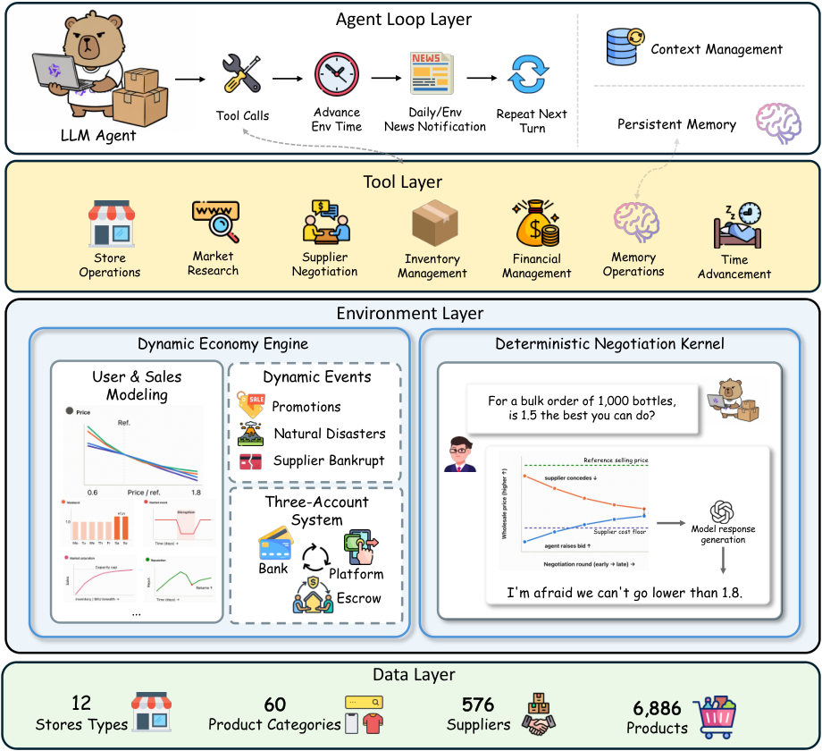
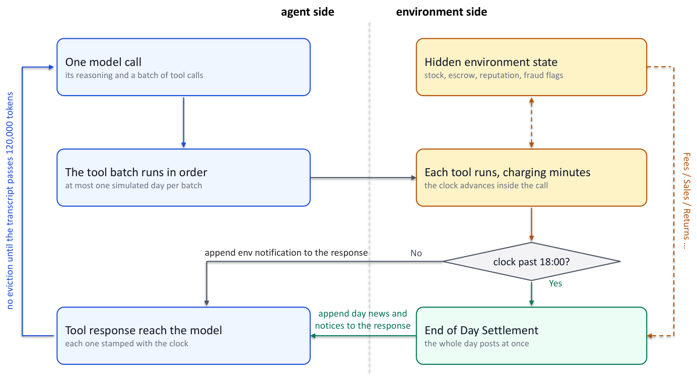
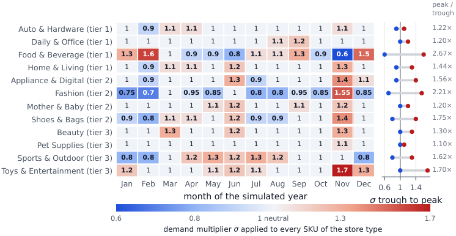
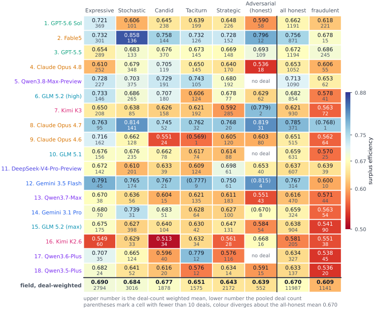

长周期Agent任务不是把短任务多连几轮：不断演变的动态环境与长距离依赖，要求模型在上千步里持续探索、从经验学习、调整策略。E-Commerce Bench用一座模拟一年的电商帝国，把这种「长周期自主经营」能力做成首个开源基准。
本文为论文（arXiv:2608.30730）详细编译，覆盖任务设计、四层架构、确定性谈判引擎与18模型的7维评测，图片全部保留。
大语言模型（LLM）Agent（智能体）日益被期望处理跨越数千步的任务，在长轨迹中借助外部工具进行规划和行动（Yao et al., 2023）。此类任务要求Agent（智能体）做出顺序决策、适应过往经验，并在初始指令之后长时间保持连贯性。这种持续能力标志着当前模型的前沿，也难倒了大多数Agentic（智能体原生）基准测试。在强化学习中，任务分为回合式（episodic）和持续式（continuing）两类（Sutton and Barto, 2018），这一区分同样适用于长视野Agentic（智能体原生）任务。回合式基准设定目标并对其完成度评分，无论是解决GitHub issue（Jimenez et al., 2024）、操作真实计算机（Xie et al., 2024），还是产出由专家评分的知识工作（Patwardhan et al., 2025）。持续式任务没有终止状态，在动态环境中无休止地运行（Qian et al., 2025; Chen et al., 2026），并对累积结果进行评分，从而暴露长视野带来的失败，包括连贯性丧失以及无法将经验转化为更优决策。商业运营提供了天然的持续场景，其中包含高风险、不可逆的决策，复合的财务健康状况考验着Agent（智能体）的持续能力。尽管前景广阔，现有基准仅部分覆盖了这一环境。Vending-Bench系列（Backlund and Petersson, 2025; Andon Labs, 2026）模拟了多轮供应商谈判，但其对模拟数据和基于提示的模拟的依赖产生了高度随机的供应商反馈，容易受到操纵。YC-Bench（He et al., 2026）运行一个确定性的初创企业年度，但不涉及供应商寻源。基于数据的零售基准如MerchantBench（Shi et al., 2026）和RetailBench（Zhang et al., 2026c）加入了真实产品和开放代码，却完全放弃了谈判和对抗性动态。显然，现有基准要么偏离真实市场动态，要么在多轮谈判中依赖纯LLM驱动的对手，这引入了大量采样噪声，最终损害了评估的可信度和可复现性。
为解决这些问题，我们提出E-Commerce Bench，这是首个在真实持续商业运营中统一确定性供应商谈判和客户销售建模的开源基准（图3）。在模拟的365天年度中，Agent（智能体）可同时运营最多四家在线店铺，研究市场、谈判获取高性价比商品、制定销售策略并管理现金流，以最大化年末总资产。环境基于淘宝和天猫数据，共包含6,886种产品和576家供应商，这些数据根据经验平台日志校准；同时，包含促销活动、自然灾害和供应链冲击的全年日历持续改变动态市场需求。关键市场因素（如基准产品成本和精确消费者需求）保持隐藏，要求Agent（智能体）通过基准提供的专用电商工具集持续搜索、谈判和建模市场动态。同时，基准框架自动管理上下文窗口，并提供持久记忆模块（Packer et al., 2024; Park et al., 2023）以维持长达一年的运营视野。为确保严格的可复现性，确定性贯穿市场两侧。客户购买和退货遵循固定需求模型，该模型结合价格弹性、星期、季节性、计划促销、市场事件和店铺声誉，其唯一随机性来自回合的种子，因此运行可精确复现。在供应侧，确定性谈判内核通过显式议价策略固定每个定价、让步和接受/拒绝决策，而LLM仅将其渲染为对话。约四分之一的供应商在运行间不变的内核上表现为对抗性欺诈。客户或对手方的定价和接受/拒绝决策不受采样噪声影响，因此结果差异完全归因于Agent（智能体）策略而非偶然。只有LLM渲染器的措辞在运行间有所变化（§3.5.2）。
作者从多维度评估18个领先的前沿和开源模型，涵盖谈判质量、欺诈规避、现金流与偿付能力、运营效率、运营执行、跨周期学习六个维度 + 年末总资产。
① 真实商业环境：基于淘宝/天猫平台数据落地，是首个把确定性对手谈判 + 动态事件 + 真实持续性商业运营统一的开放基准。
② 市场确定性：两边市场都确定性：客户购买/退货走固定需求模型，供应商定价/让步/决策走确定性谈判内核，LLM仅用于把结果「翻译成话」，保证每轮运行可比、可复现。
③ 多维评估：18模型多维度评测，让单一总资产数字无法再掩盖模型弱点：把六个维度与总资产并列读，leaderboard就变成能力地图。
回合式（episodic）长视野任务：运行带终止状态，常见于SWE-bench、GAIA这类一次任务一把评估的基准。
持续式（continuing）长视野任务：没有终止状态，Agent无限期行动、累积分数：交易、实时博弈等形态反复出现。E-Commerce Bench属于后者，且加入真实电商数据、多轮谈判与对抗性供应商。
E-Commerce Bench为Agent（智能体）提供一个商户账户、¥100,000资金以及模拟中国在线市场中的2026日历年。任务是在年底前尽可能多地积累资金。Agent（智能体）研究哪些店铺类型和品类存在需求，与供应商议价，采购库存并发布到最多四个店铺之一。随后，它为商品定价、读取昨日销售数据、发货、处理退货，并在下一次运营费用产生前提取已结算收入。为了评估驱动年终利润的策略，我们独立评分六项核心能力：谈判质量、防欺诈、现金流与偿付能力、运营效率、运营执行以及长期学习（§3.7）。接下来，我们详细介绍E-Commerce Bench的四层结构。

模型与环境之间存在三种机制。回合循环（图4）限制单次模型调用的能力，并对其使用的每个工具收取模拟分钟费用。每个回合都会将工具调用流量添加到消息列表中，一年内的调用次数远超窗口容量，因此上下文编辑器会优先驱逐最早的回合。窗口并非真正的限制，因为长上下文在溢出之前性能就已显著下降（Liu et al., 2024; Bai et al., 2024）。由于被驱逐的文本不会留下任何痕迹，Agent（智能体）还拥有一个不受任何驱逐操作影响的持久记忆系统。

在单个回合内，模型可以请求多个工具，这些工具按给定顺序逐一执行。因此，回合范围从单次余额查询到一批十几个工具不等。一个回合最多运行4,000轮（§4.1），或者当模型连续三轮未调用工具时提前结束。除日期跳转外，每个工具都会消耗模拟分钟：余额查询10分钟，开设店铺60分钟（附录A表3），从每天08:00至18:00的600分钟中扣除。查询信息与基于信息采取行动使用同一时钟。一条消息无论发送给一个供应商还是十个供应商，都消耗30分钟，因此二十条消息即可填满一天。
时钟逻辑：一旦超过18:00跳到次日08:00，wait_for_next_day可主动跳转（不耗分钟但放弃当天剩余）。每次跳转执行同一固定结算序列。
上下文管理：单个分词器统计每个模型的上下文，保证所有模型在同一128,000 token预算下运行；达120,000触发驱逐、释放到60,000，整个工具调用组会被整体驱逐。
持久化记忆：记忆是Agent保存在环境里（而非自己消息里）的笔记列表，驱逐机制碰不到它；最多20条，每条含标题+内容，Agent完全自主管理。
十八个工具覆盖了商户的后台操作，分为图3所示的七个组别，表3列出了每个工具的分钟成本及其效果。除日期跳转外，每次调用均按模拟分钟计费（§3.2.1），这使得工具列表成为预算而非菜单。查询银行余额、仓库和一个店铺状态各需10分钟。每天早间例行检查这三项需花费30分钟，全年累计超过18个工作日。只有chatbox能创建采购订单，因此每单位库存都通过携带围栏协商块（§3.5.2）的自由文本到达。常规邮件、供应商报价和欺诈性推销（§3.5.4）均通过该工具消耗相同的30分钟。
销售与经济引擎决定Agent（智能体）的销售量及收款时间。市场没有任何随机采样。固定公式计算客户每日购买的单位数量，资金按固定延迟在账户间流转。模拟器仍会抽取少量随机数，例如将小数需求单位转为整数时，这些随机数来自所有运行共享的同一随机种子，因此两个采取相同动作的回合在年末会拥有完全相同的资金。
多店设置：Agent自己开店铺交易，12种店铺类型可选（覆盖不同类目组合），最多同时4家、每种类型一家；开店 ¥500。
三账户延迟结算：赚到的钱不能马上花：现金放在三个位置（银行/平台钱包/未结算托管），银行即时付成本，销售收入推迟很久才回笼。这逼Agent管理现金，而不是只看账面。
销量由命名因素决定，而非随机抽取。某SKU在某日的需求起始于其类别在该类型店铺中的销量。随后六个乘数作用于该基数：对挂牌价格的响应、周末提升、智能体参与的促销、月份的季节性、当日日历事件以及店铺声誉。两个容量项对结果进行削减，一个针对类别，一个针对店铺，各自设定该类别或店铺当日可吸收需求的上限。最终结果以货架上实际库存为上限。
需求由命名因素决定而非随机：某SKU当日需求自其类目在该店铺基量开始，受六个乘数作用：挂牌价响应、周末提升、Agent参与的促销、月份季节性、当日汇率、类目各自的价格弹性族。
月度季节性：12种店铺类型各有独立季节性曲线，按难度分级：右栏给出每种类型的波谷、波峰与峰谷比，是Agent判断「何时该囤货/清货」的关键信号。

履约与退货：发货方式是有价格的选择，更快配送=更高运费+更少退货；超过两天未发货自动取消（商品退回、计入声誉）。
声誉系统：店铺声誉直接乘以其需求，服务失败直接丢销量；信用于发货时而非售出时累积。
动态事件系统：日历推动需求（无论Agent是否准备好）：固定日期市场事件按店铺类型缩放需求、延长交付周期；风暴抬高食品却在削减时尚鞋类，方向很少一致。
每日结算：成本在任何收入确认前被扣，所以每天早晨检验偿付能力；Agent操控的系统相对其滞后一天。
谈判引擎决定代理为库存支付的价格。其销售的每一单位都必须从指定供应商处购买，每次通过一条聊天消息，价格由双方协商确定。大约四分之一的供应商选择赚取而非支付（§3.5.4），因此不仅需要选择谈判对象，还需与其讨价还价。
采购一个SKU始于向一家供应商发送消息，终于达成价格或一无所获。双方均不了解对方的底线。供应商从不透露其不愿出售的最低价格，因此每次购买都是在信息不完整条件下的双边谈判问题（Harsanyi, 1967; Chatterjee and Samuelson, 1983; Rubinstein, 1982）。这样一个循环即为一次会话 𝑧 = ( 𝑠 , 𝑗 , 𝑐 ) ，即供应商 𝑠 与SKU 𝑗 之间的第 𝑐 次谈判。没有规则规定会话在固定轮次结束。取而代之的是，截止时间尺度设定时间压力，超过其中点后，供应商可以拒绝低于其底线的报价（附录D.1）。
评估中的一对数据确定了该尺度。Ridge Express对单一SKU报价 ¥149.81，代理以市场参考价 ¥199.75转售。两者之下是代理从未见过的 ¥101.27底线，留给双方分割的空间为 ¥98.48。图8的面板(a)逐次报价跟踪了这样一次会话，面板(b)则展示了这对组合在一年内达成的九笔交易。
两个价格界定了会话可能的价值范围。代理以公开市场参考价 𝑣 𝑗 转售（§3.4），而供应商 𝑠 持有私有底线 𝑐 𝑗 𝑠 。谈判在两者之间的差距内进行，即可能达成协议的区域（ZOPA），因此以单价 𝑝 𝑧 成交 𝑞 𝑧 单位，代理获得 ( 𝑣 𝑗 − 𝑝 𝑧 ) 𝑞 𝑧 的收益。差距有多大、供应商多急需这笔销售以及其施压程度，均一次性确定并保持隐藏。代理在不知晓自身谈判空间的情况下进行谈判。
由此产生两种相互对抗的能力：从诚实供应商处压价要坚定，拒绝欺诈供应商则要果断放手：赢得好价格的坚定恰恰也是导致僵局的因素。
结果差异只有在每次运行中所有模型都面对相同对手经济条件时，才能说明智能体的表现。完全由LLM扮演的供应商会从两方面破坏这一前提。采样使其价格在每次运行间波动，且其仍可被说服，因此一个足够雄辩的智能体可以将其压至自身底线以下，将基准测试变成越狱竞赛。因此，每个供应商被拆分为两层。
第1层（确定性谈判内核）：所有价格、让步、接受/退出决策来自确定性内核而非模型：一个内核服务一个（供应商, SKU）对，保留价与初始报价来自数据层；诚实供应商从6种行为模板抽取，难度组合预设固定。
第2层（NPC渲染器）：第二个LLM把已确定的内核决策「翻译成」供应商聊天内容：只传达准确的价格/决策，仅从内核情绪线索取语气，对话内容丰富而经济中性。
现有谈判基准中一次会话就是评估单位；而完整年度里博弈是重复的：要求Agent把一次遭遇学到的对手信息，转化为下一次更优的价格。
学习在谈判桌两侧同时进行：每个供应商的交易历史进入其提示词（供应商会「记住」之前卖得多便宜），Agent则可在诚实/欺诈供应商之间套利；卖方内核从不接受低于保留价的报价。
576家供应商里152家是欺诈的（占约1/4），每家运行硬球内核 + 五种脚本化诈骗之一：
交易前诈骗：把保留价抬到诚实成本下限的1.5倍：任何协议都比诚实竞争多付，抬高的下限仍落在诚实报价范围内，只有叙事线索能暴露。
交易后诈骗：保持诚实成本下限、在履约阶段违约：短量交付只给60-70%，缺陷库存退货率抬到0.40或自然回收两倍（取高者）。
数据层：每个数字来自真实电商平台（淘宝/天猫），或直接脱敏、或按数据日志分析手工合成；环境含60类目6,886商品、576家供应商（424诚实 + 152欺诈），12种店铺类型覆盖9到1个类目。
系统性信息不对称：Agent能看到目录和自己行为的结果，但永远看不到决定行为价值的需求/成本底价参数；市场查询按三个层级粗→细回答，最细是单类目销量区间。
主要得分是年末总资产，即银行账户、平台钱包和未结算托管账户之和，以相对于 ¥100,000初始资金的资产倍数报告。破产在期限前结束运行（§3.4.2）。截断运行计入平均值而非丢弃，因此五次运行的平均值可能混合截断运行和完整年份。围绕年末资产衡量六项能力：
（1）议价能力根据智能体（Agent）将价格压低的程度评分。CSE+ 对谈判质量进行排名，衡量诚实成交覆盖从公开参考价到供应商成本底价的距离比例，其中1表示按底价购买，0表示按参考价支付，按会话平均且不按订单规模加权。同时记录SE+、%Oracle、AGR+、成交轮数、成交笔数，以及按供应商行为模板划分的盈余和支出（§E.1）。（2）欺诈规避追踪资金而非对话。排名基于BadSpend%，即清算到欺诈供应商账户的订单支出占比，越低越好。同时记录欺诈成交率（欺诈会话中达成交易的比例），以及覆盖五种骗局损失、会员费支付、联系或下单的欺诈供应商数量的诊断指标（§E.2）。（3）偿付能力根据一年回吐自身最佳仓位的程度判断。峰值回撤与峰值总资产的比率对现金流和偿付能力进行排名，因为档案以绝对人民币记录回撤，规模十倍的企业在相同纪律下回撤也十倍。未归一化回撤、破产运行、透支天数、最低银行余额、闲置平台钱包和最大持仓仓库构成该维度（§E.3）。（4）运营效率将一年的利润与产生利润的调用次数对比。平均利润与平均工具调用次数的比率对模型进行排序。同时记录调用次数、八个活动区间的分布、轮次、转录所需的驱逐次数和记忆存储流量（§E.4）。（5）运营执行根据可控退货率排名：模型定价高于基线产生的超额退货（发货时累计；折扣价为负），排除欺诈引起的缺陷。辅助诊断包括实际退货、退款和运费损失、准时交付率、因两天期限丢失的订单、层级组合和店铺数量（§E.5）。（6）学习能力从智能体（Agent）每次重复从同一供应商购买同一商品后的行为读取，一年内通常多次。AnchorRatio通过衡量每次重复订单相对于该智能体（Agent）此前为该商品向该供应商支付的最低价格的超额支付来对整段时期的学习进行排名。旁边是置换零假设下的相同超额支付AnchorRegret、NewLow比率、组合zanchor、重复订单次数和三个半年比较（§E.6）。
实验设置：18个模型完成365天任务：8专有 + 10开放权重，每个模型在同一固定世界跑5个独立回合（共90回合），按层级内平均总资产排名。
从同一模拟年份的相同本金出发，各模型的最终结果相差数个数量级。GPT-5.6 Sol位居榜首，Qwen3.5-Plus垫底，两者相差1,264倍（表2，图1）。给定动作序列后环境是确定性的（§4.1），因此该差距归因于智能体本身而非重采样的需求。专有系统占据前四名（表2）。Qwen3.8-Max-Preview领跑开放权重层级，总排名第五。在Qwen家族内部，每个新版本都比前一个版本赚得更多，其中Qwen3.8-Max-Preview收益最高。3.6到3.7的跨越值得关注，因为Qwen3.7-Max在五个回合中从 ¥6,290波动至 ¥358,790，其最差年份低于Qwen3.6-Plus的所有年份。强模型也会破产。90个回合中有十个以资不抵债告终，其中六个来自闭源模型。GPT-5.5、Claude Opus 4.6、Gemini 3.1 Pro和Qwen3.5-Plus包揽了全部十个破产回合，且这四个模型放弃了超过一半的峰值总资产（§4.3.3）。按资产排序只能部分反映其背后的技能（图2）。§4.3逐一分析各维度，附录F包含每个模型的全部维度表。
谈判质量：没有模型能把价格压到供应商成本底线；Claude Opus 4.7保留最多谈判空间(0.811)、Kimi K2.6最少(0.596)。
谈判范围捕获率（下图）：全部13,128笔已达成协议中，各模型面对每种供应商捕获的议价区间比例：列从最容易的对手到最难，行是各模型面对诚实/欺诈供应商的表现对比。

欺诈规避：每个模型都会把部分采购预算花在欺诈供应商上：跨度超160倍，Claude Opus 4.7最干净、Qwen3.5-Plus最严重。
现金流与偿付：资金回笼前数周就离开银行账户，收入在托管等9天再提现；90个回合里49个在1月就触底。
运营效率：排名第二的Fable5每次工具调用赚 ¥479，比榜首GPT-5.6 Sol的 ¥363高，且调用次数少59.9%。
运营执行：可控退货率从Qwen3.7-Max的 -0.05到Qwen3.5-Plus的 +X。
跨周期学习：18个模型只有2个能在重复订单上压过自己此前拿到的价格：Qwen3.8-Max-Preview学习最强（Anchor 0.834）。
三个常被归咎于长周期失败的模式在数据中并未得到支撑：错误分析用十条重复模式的检测规则定位失误，而非只靠总资产排名。
总资产是结果，不是能力：读到六维拆解才发现，最高营收模型在防欺诈和运营效率上可能垫底；真正会用历史谈判锚点、能从经验中压低价格的模型，才能把一次学到的对手信息变成长期收益。
参考：https://arxiv.org/abs/2608.30730